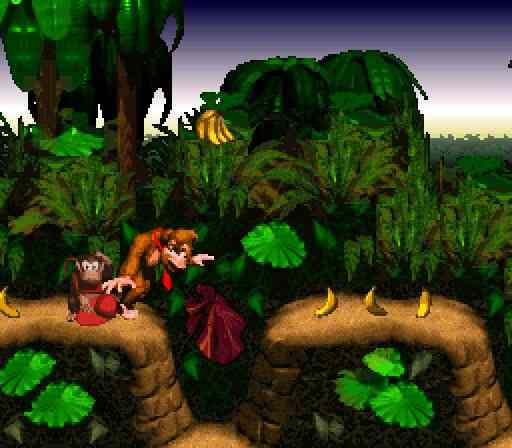

スーパードンキーコング
1994年11月26日発売
開発：レア 発売：任天堂

僕が初めてプレイしたゲームがこの作品でした。アクションゲーム好きになったのは、このゲームのせいです。
グラフィック、音楽、システム全ての完成度が高く、
「ゲームってこんなにすごいんだ」
と実感した作品です。
このゲームはかなりやりこんでいるので、今でもボーナスステージの場所全てを覚えているのがちょっとした自慢です。
個人的にはこのドンキーシリーズを作っている
「レア」
という会社のゲームはどれも面白いです。
ちなみに僕は「２」「３」「６４」「リターンズ」「トロピカルフリーズ」も全てプレイ済みです。ドンキーマニアです。